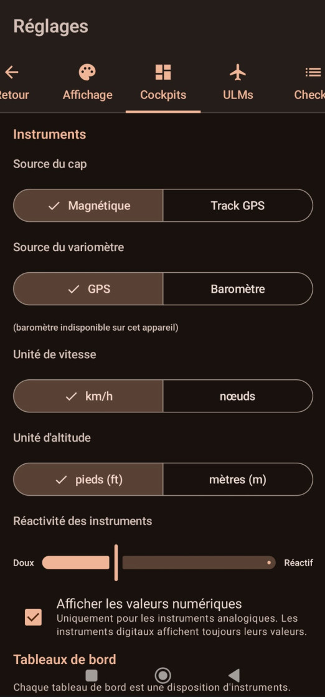
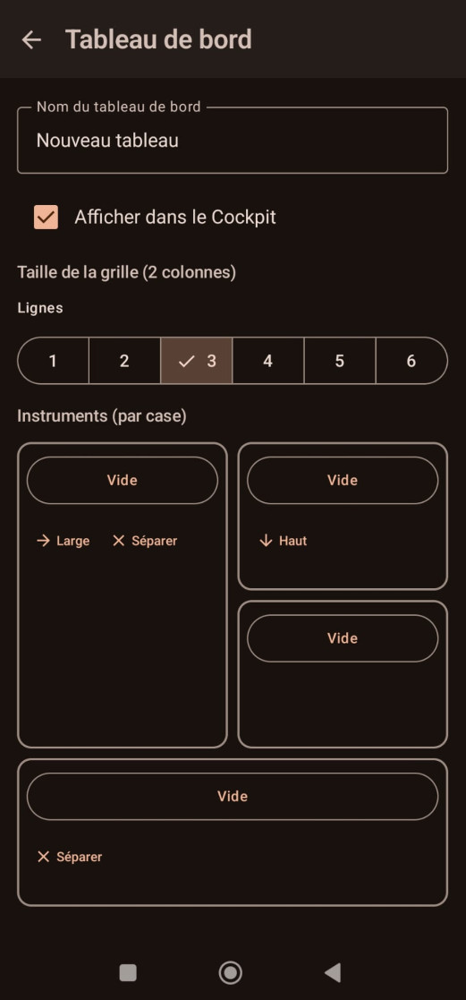

🛩
Cockpits
Marqueurs des cockpits · tableaux de bord · import JSON / QR
Marqueur · points / barres / numéros
Position · haut / bas
Import · JSON / QR


Possibilités
Marqueurs des cockpits
- Style de l'indicateur de page (quand plusieurs cockpits sont accessibles) : points, barres ou numéros.
- Position du marqueur : haut ou bas de l'écran.
Tableaux de bord
- Grille 2×N avec fusion de cellules pour composer les dispositions.
- Ajout / édition / suppression (menu ⋮) et réordonnancement des tableaux de bord.
- Case « Afficher dans le Cockpit » : slidez gauche/droite pour changer de tableau.
- Flèches ↑ / ↓ à côté d'« Options » : réordonner les lignes (déplacement par blocs, en tenant compte des cases fusionnées sur plusieurs lignes).
- Bouton « Options » d'une case : couleur / style du contour (Couleur par défaut, Carbone, Métal, ou une couleur sombre spécifique), gestion de la case (Large / Haut / Séparer) et les options « Masquer le titre » (supprime la pastille de titre sur les instruments analogiques ou le libellé sur les numériques — donne plus de place au contenu) et « Masquer la bordure de l'instrument » (supprime le contour de la case) — de quoi repérer un instrument d'un coup d'œil.
Import / export d'un cockpit
- Import JSON et Import QR : ajoutent un nouveau cockpit (jamais destructif — nouvel identifiant, les cockpits existants sont conservés). Import JSON propose le choix entre un fichier .json et le presse-papier (texte copié). La grille importée est renormalisée. L'import QR utilise la caméra de l'appareil (autorisation Caméra requise).
- Les cockpits se préparent aussi dans un navigateur avec le Créateur de cockpit (éditeur de grille 2 colonnes fidèle à l'éditeur Android), puis s'exportent en fichier .json ou en QR code — à importer ici. Le créateur fonctionne entièrement hors-ligne.
- Format de l'enveloppe :
{ "type": "airdetente.cockpit", "version": 1, "dashboard": {…} }.